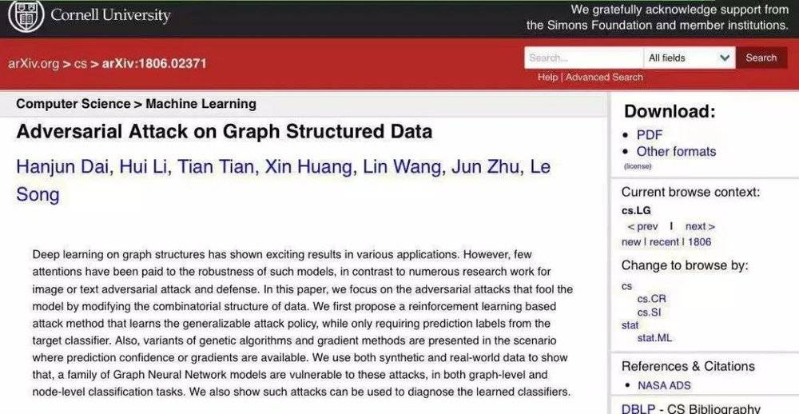
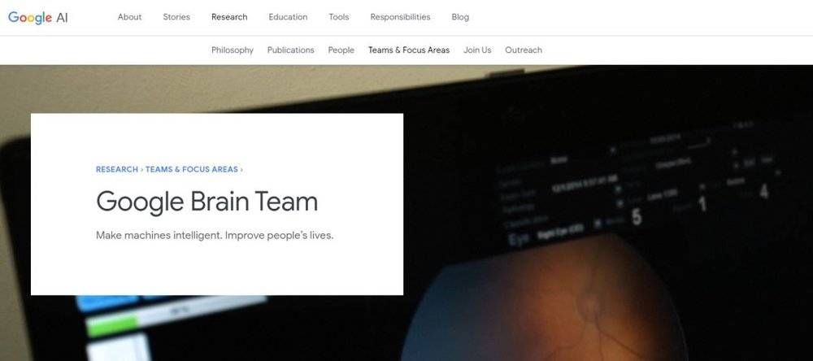

為什麼這個黑客攻入銀行系統，卻只黑了一分錢？

作者：譚婧 世上總會有騙子，人工智慧時代也不例外。想起《天下無賊》里葛優說的那句：「我最煩你們這些打劫的了，一點技術含量都沒有。」 在人工智慧的騙局裡，最不缺的就是技術含量。 當人工智慧自動合成語音軟體，模仿熟人的聲音給你打電話的時候，還可以安慰自己「耳聽爲虛」。扭臉間，人工智慧又在視頻中給主人公換臉，讓「眼見爲實」變得十分尷尬。不過，博弈始終存在，人類也會欺騙人工智慧，甚至攻擊。
黑客再出擊，如何攻破機器學習模型？ 如何有技術含量的欺騙人工智慧？如何攻破機器學習模型？這個問題正在被前沿學術界所關注。 所以， 有效地去攻擊現有的機器學習模型是可能的。 街角電線桿子，膏藥小廣告上寫著：缺錢嗎？朋友，騙過銀行人工智慧，實現貸款100萬的授信額度。如果當黑客擁有了一項技術，可以攻擊全天下計算機系統里的機器學習模型時，最想攻擊哪裡？人性的貪婪的目光總會落在銀行身上。如果說武裝劫匪的目標是銀行大廈里的金庫，那麼網際網路銀行就是黑客的目標。 若要實現小廣告所示的黑產業務，作案時需要滿足兩個條件： 條件一：某網際網路銀行的客戶信用積分是用深度學習技術計算的，該銀行信用系統中人工智慧深度學習技術對轉帳人信用值這個特徵非常敏感。在該銀行信用系統的人工智慧深度學習模型中，有沒有與土豪的往來轉帳記錄，將會作爲貸款人貸款級別高低的一個依據。這一關鍵「特徵」的改變會影響貸款額度。 條件二：黑客爲了欺詐貸款，想方設法讓土豪轉了一分錢，雖然只有一次轉帳，雖然交易數額極低。 一分錢的硬幣，掉在路邊都沒有人去撿。但是，這一分錢的轉帳在「圖結構」中，相當於與富豪有一條邊相連。如果銀行信用系統中人工智慧深度學習技術對轉帳人信用值這個特徵非常敏感，這一條邊的增加，則舉足輕重。其結果，可以是讓黑客在頃刻間，擁有了可以向銀行貸款100萬的信用額度。 這項攻擊可以將金融機構置於巨大風險之下。如何解決呢？很遺憾，迄今爲止沒有辦法徹底解決。不過爲了解決這個問題所作的第一步的努力，是找到現有深度學習技術在這方面的漏洞，也就是神經網絡脆弱的地方。 學術界對此也非常關注，有一篇人工智慧的頂級會議論文對這個問題進行了研究。論文出自清華大學朱軍和美國喬治亞理工大學宋樂的研究團隊，論文標題是《對抗性攻擊用於圖結構數據（Adversarial Attack on Graph Structured Data）》。這篇論文被收錄於第三十五屆ICML人工智慧頂級學術會議，屬於前沿研究領域。
 爲什麼選擇圖結構數據？ 金融交易網絡等其數據天生就適合於圖表達。銀行的交易網絡天然的就是圖結構。圖 （graph）是什麼？圖通常由一些結點 （nodes）和連接這些結點的邊 （edge）組成。詳細地說，節點 （node）通過邊 （edge）連接，圖是互連節點的集合。圖 （graph）是表示一些對象 （objects）與另一些對象之間相互連接的結構。 圖結構具有強大的表達能力，許多實際問題可以用圖結構來表示。而圖結構中的節點和關係就像圖像和文本數據一樣是到處都存在的數據。圖，是一種數據結構，它對一組對象 （節點）及其關係 （邊）進行建模。圖上的表徵學習，逐漸變成機器學習的一大核心領域。卷積神經網絡是深度圖像學習技術之一，圖卷積神經網絡 （GNN）是將卷積神經網絡技術拓展、升華到更通用的圖結構數據，它已被廣泛的應用到各大網際網路、金融、生物醫藥公司。 圖裡的節點可以是用戶帳號、電子郵箱、WIFI設備、天貓旗艦店、公司、車站，甚至可以是變電站。如果你在淘寶購買了一支口紅，你 （購買者）、香奈兒官方旗艦店 （淘寶商鋪）這兩者都是可以是節點，而購買行爲是邊。一次網購可以用一個簡單的圖來表示，兩個節點一條邊。一次轉帳也可以用一個簡單的圖來表示，兩個節點一條邊。關係數據是圖計算的一個基本的數據。沒有關係數據，圖計算就是胡扯。 在紛繁複雜的算法世界中，圖數據又複雜，又普遍存在。圖數據有自己的特點，蘊含的信息極其豐富，極具價值。可以說，圖數據是一座寶藏。例如谷歌的搜索業務也用到了圖計算，或者可以說，谷歌的成功起步於這個算法。想知道網頁（就是節點）的重要性程度，需要有個PageRank的算法。爲什麼搜索到的這麼多網頁有的要被放在搜索的首頁。因爲有了定量的分數，才可以對網頁排序。所以，圖計算的算法一直在默默地改變世界。 深度學習有缺點？別放棄治療。 在人工智慧的世界裡，深度學習正處在巔峯。2019 年 3 月 27 日，計算機權威機構ACM 宣布，深度學習的三位創造者 Yoshua Bengio，Yann LeCun，以及 Geoffrey Hinton獲得2019 年的圖靈獎。圖靈獎也愛上了深度學習。 可以說深度學習是人工智慧世界裡最好用的「鏟子」。
所以，需要對深度學習進行對抗性研究 「對抗性攻擊 （adversarial attack）」一詞最早是在2014年，由谷歌公司人工智慧研究人員Christian Szegedy帶領的研究小組在論文中提出的。在一輛校車的圖片上加上一層對人類來說無形的數據噪聲，就是那種人眼看不出來不同的噪聲，結果神經網絡就被騙了，傻兮兮地認爲，它幾乎可以肯定校車是一隻鴕鳥。這麼容易被騙，那還了得，所以，研究人員會開始從對抗的角度來研究它，因爲深度學習技術越來越普遍了，有缺陷得早點治療。 論文《對抗性攻擊用於圖結構數據》的摘要部分提到，「圖結構的深度學習算法在各種應用中取得了令人興奮的結果。然而，對這些模型的魯棒性研究還很少，對圖像或文本的抗攻擊和防禦性的研究也很少。在這篇論文裡面提出了三種方法：基於強化學習的，基於遺傳算法的以及基於梯度近似的。數據表明，圖神經網絡模型容易受到這些攻擊。」該論文對圖深度學習魯棒性及對抗性攻擊進行了開創性的研究。 用強化學習的方法，找到漏洞 論文通訊作者是美國喬治亞理工大學計算科學與工程系終身副教授宋樂。他也是國際機器學習協會董事會成員之一，及第35屆機器學習技術國際會議 （ICML）署名論文數量排名第三的作者，與其他兩位科學家並列。 宋樂教授認爲，強化學習的目的是找到一個策略從而最大化累積回饋 (Maximize accumulated reward)。強化學習能夠通過和環境交互變得越來越聰明。例如黑客不斷地試探支付寶芝麻信用的打分機制或者某銀行的信用機制，去嘗試提高信用分值。用強化學習的方法來尋找圖深度學習模型的漏洞的過程也需要反覆試錯。 這種方法非常有效，在金融機構內部安全演練中也在使用。比如，爲了尋找系統漏洞，也會進行紅方和藍方模擬相互間的攻擊，來不斷的提高系統安全性能。論文的方法，用一句話來概括就是：用一個聰明的算法，嘗試較少的次數，成功地找到深度學習網絡的漏洞。「嘗試較少的次數」一詞需要稍加解釋，論文裡面的「次數」主要是關注修改儘量少的圖上的邊。比如只需要讓巴菲特或者馬雲給你轉一次帳，而不是讓一羣土豪給你轉帳很多次。」 這裡還需要對圖數據中節點 （node）的重要性進行描述，提煉成表徵的描述，強化學習會生成一個策略，比如在網絡中給某個節點加一條邊，那就是在圖結構的數據中，網絡中要和誰連接的問題。如果轉化成網際網路銀行的實際業務問題，簡單說來，就是「誰轉帳給你或者你轉帳給誰？」 論文一作爲戴涵俊博士，現爲谷歌大腦的研究員。 戴涵俊博士介紹，「論文重點考慮，怎麼降低選取一條邊策略的複雜度？在一個有N個節點的圖中選取一條邊的選擇空間有O (N^2)。如果一個金融網絡中有1萬個用戶，那選擇空間就是1億種可能性。我們把這個巨大空間的選擇分成兩步來完成，即第一步選邊的起點，第二步在第一步的基礎上選邊的終點，從而把複雜度降低到O (N)。」
 論文的關注點在於圖的結構方面。比如針對某個人的社交關係進行修改。從學術角度講，就是論文中考慮的對圖的修改可以是對已有的邊刪除，也可以是添加新的邊。所以，當攻擊行爲摸索到圖深度學習模型的規律，很可能會發生：土豪轉帳給你，哪怕只有一分錢，也有可能提高你的授信額度。 但是更可怕的攻擊行爲是，馬雲給馬化騰轉帳了一分錢，從而使你獲得貸款100萬元的授信額度。因爲從圖結構數據的本質來理解，對社交關係進行修改，可以是比如跟你加好友，刪好友，以及轉帳給某人。這一小小的動作，也是一種改變網絡的一種方式。 說到底， 所有的攻擊如果想通過最少的步驟 （次數）來完成，都是一個優化問題。 論文還提到了其他攻擊方法，也就是強化學習之外的方法，包括隨機 （Random）攻擊，基於遺傳算法的攻擊和基於梯度近似的攻擊。按葛優的理解，都是「技術含量極高」的手段。攻擊行爲可以理解爲一種試錯行爲，一次試錯，一次回饋，但是很難窺見模型的全貌。 如果攻擊者可以訪問有關基礎模型參數和架構的信息，以及算法及其所使用的參數，則稱爲白盒攻擊。如果攻擊者無法訪問已部署的模型體系結構等，則該攻擊稱爲黑盒攻擊。這些都是高水平的攻擊方法。 在了解了攻擊人工智慧的招式之後，我們不難發現人工智慧機器學習的魯棒性和泛化能力，關乎金融機構系統安全性，又關乎抗風險能力。土豪轉帳一分錢，貸款額度瞬間漲。值得欣慰的是，對人工智慧技術的攻擊已經在前沿科技研究者的視線範圍之內。論文作者宋樂教授總結道，「論文的結論包括，論文中設計的方法對圖深度學習攻擊有效，圖深度學習魯棒性還有待提高」。 參考文獻： 《learning Combinatorial Optimization Algorithms over Graphs》，Hanjun Dai, Hui Li, Tian Tian, Xin Huang, Lin Wang, Jun Zhu, Le Song返回搜狐，查看更多